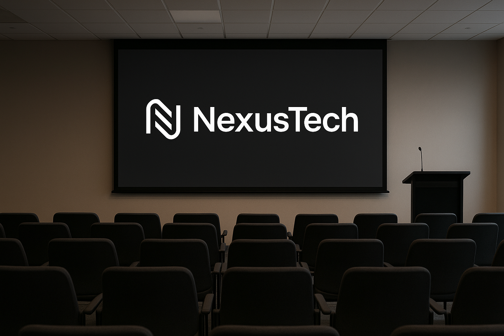

Nuestras instalaciones
Equipo de trabajo

Vista de nuestras oficinas principales
El logo NexusTech en nuestra sala de conferencias
Tecnologias Usadas
- Phyton
- JavaScript
- Aws
- Docker
Misión
Nuestra Misión es proporcionar soluciones tecnológicas innovadoras y eficientes que impulsen el crecimiento y la transformación digital de nuestros clientes.
Visión
Nuestra Visión es ser líderes en el mercado global, reconocidos por nuestra capacidad para crear tecnologías que mejoren la vida de las personas.
Parrafo de interes
Estamos profundamente comprometidos con la satisfacción del cliente. Creemos que una relación sólida y una comunicación constante son la base para el éxito de cualquier proyecto. Por ello, nuestro equipo de soporte está siempre disponible para garantizar que cada solución implementada funcione a la perfección y cumpla con todas tus expectativas.
Servicios clave
| Desarrollo web | Consultoria de IA | Seguridad Cibernetica |
| Aplicaciones moviles | Cloud Computing | Analisis de Datos |
Enlaces de intéres
Visita nuestro sitio web oficial para más informacion: Ir a NexusTech